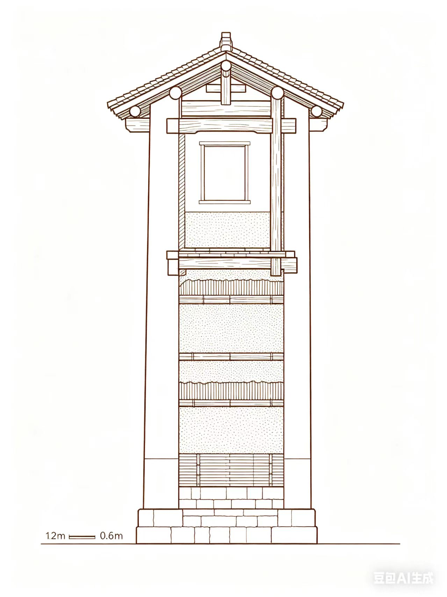
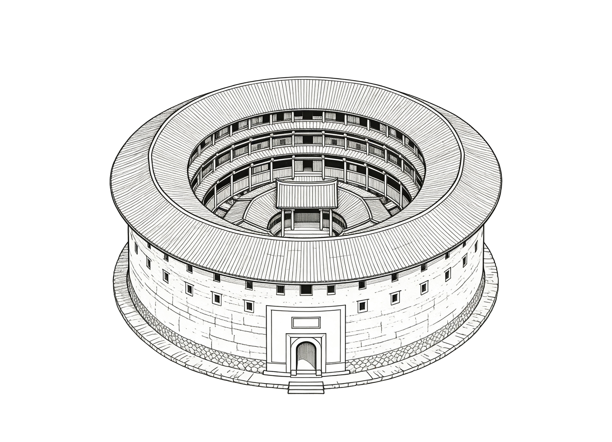
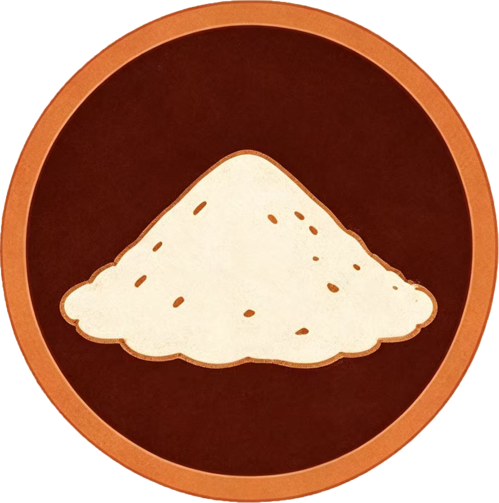
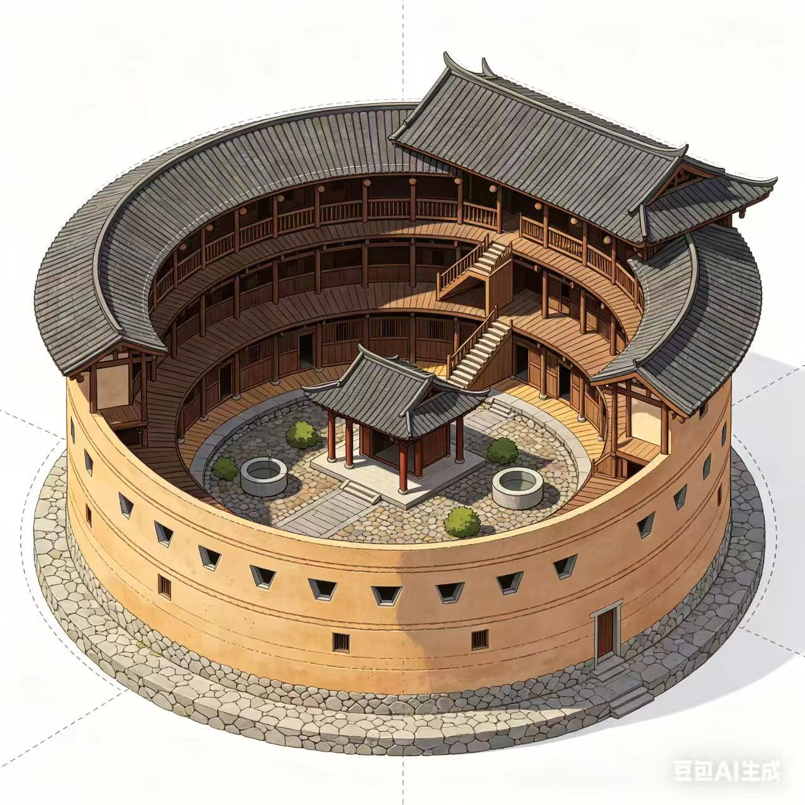
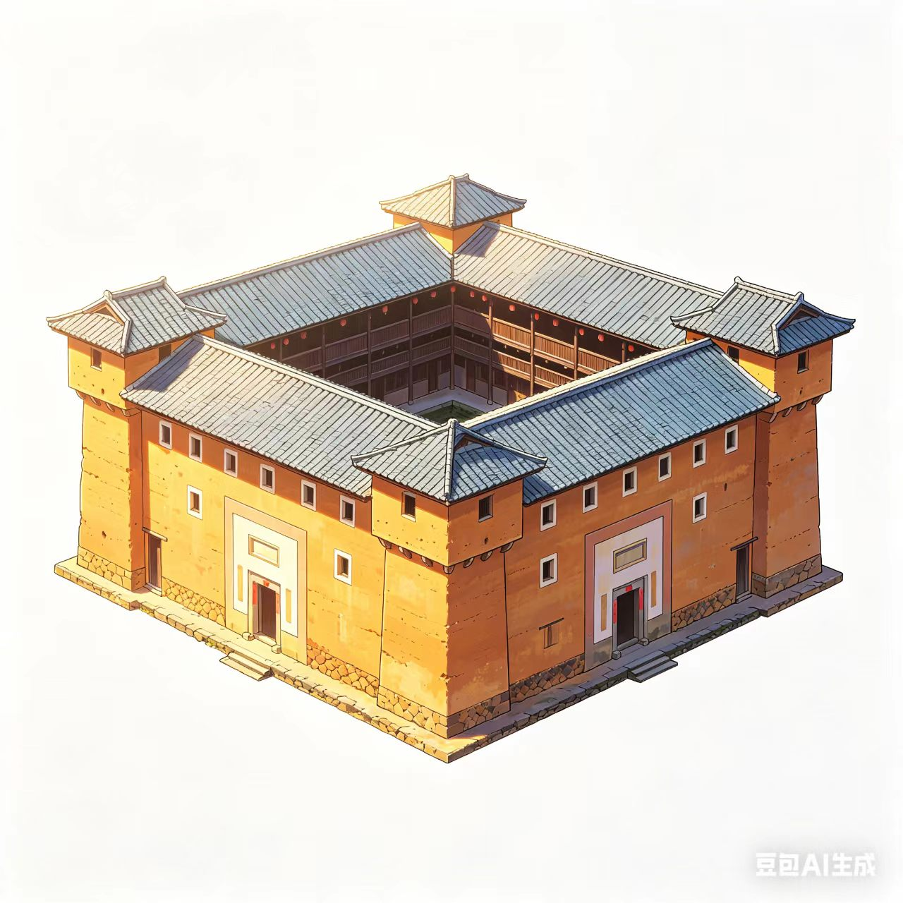
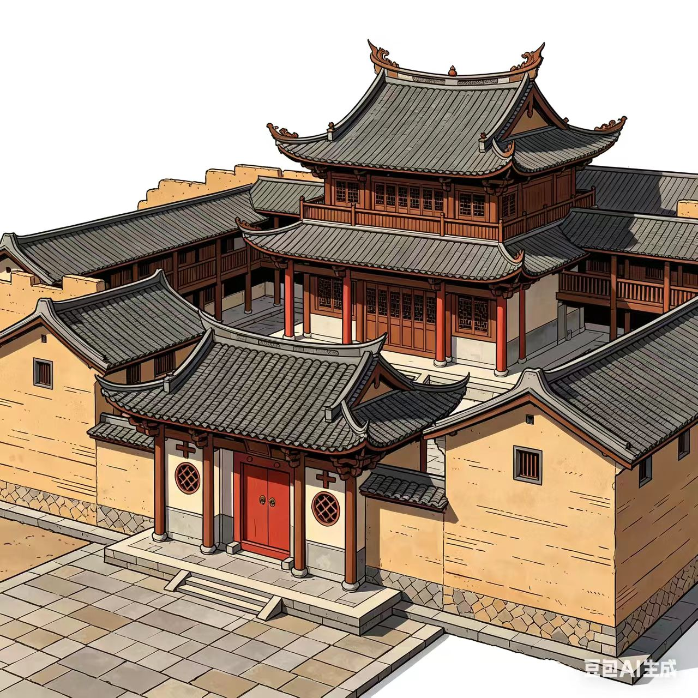

宋元
宋元时期（形成阶段）
早期土楼规模较小，结构较简单，大多无石砌墙基，装饰粗糙，形制以方形、长方形为主。
早期土楼规模较小，结构较简单，大多无石砌墙基，装饰粗糙，形制以方形、长方形为主。
明清
明清时期（成熟鼎盛）
福建土楼工艺炉火纯青，形成方楼、五凤楼、圆楼等体系，诞生承启楼等世界知名代表作。
福建土楼工艺炉火纯青，形成方楼、五凤楼、圆楼等体系，诞生承启楼等世界知名代表作。
民国
民国时期（中西融合）
吸收西洋建筑技术，部分土楼出现中西合璧的装饰与形制，风格更具多样性。
吸收西洋建筑技术，部分土楼出现中西合璧的装饰与形制，风格更具多样性。
19世纪
19世纪晚期（海外影响）
海外文化深度融入，土楼出现中西融合的建筑形式，装饰更具时代特色。
海外文化深度融入，土楼出现中西融合的建筑形式，装饰更具时代特色。
现代
20世纪50年代后（多元发展）
土楼规模扩大、结构优化、功能完善，风格向多元化发展，成为世界文化遗产。
土楼规模扩大、结构优化、功能完善，风格向多元化发展，成为世界文化遗产。



细沙、黏土、石灰

杉木

青砖瓦

竹片


